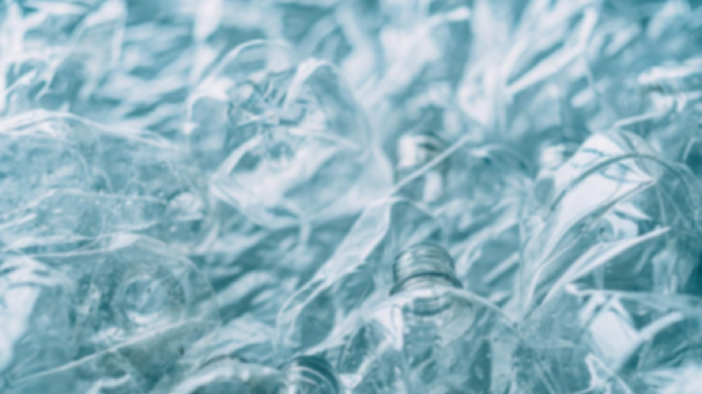
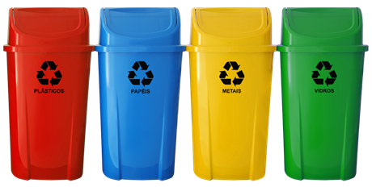

"Reciclagem é o processo em que há a transformação do resíduo sólido que não seria aproveitado, com mudança em seus estados físico, físico-químico ou biológico, de modo a atribuir características ao resíduo para que ele se torne novamente matéria-prima ou novos produtos."
Tipos de Reciclagem
- Lixeiras Azuis: Dentre os cestos coloridos usados para separar os recicláveis, o papel deve ser descartado nas lixeiras azuis. Porém, nem todo produto com essa matéria-prima pode ser reutilizado
- Lixeiras Verdes:O vidro deve ser descartado na lixeira verde, destinada a materiais recicláveis.
Porém, antes de separar esse material, você deve tomar alguns cuidados, pois ele pode cortar a mão da pessoa responsável pela coleta e separação.
Por isso, se o vidro estiver quebrado, é necessário enrolá-lo em um papel grosso.
- Lixeiras Vermelhas:Os resíduos plásticos devem ser descartados nas lixeiras vermelhas. Um grande diferencial desse tipo de material é que a maior parte desses resíduos pode ser reciclada.
Garrafas PET, potes, copos, sacolas, brinquedos, canos, entre outros, são materiais que podem ganhar uma nova origem se descartados corretamente e reciclados.
Entretanto, não é possível reciclar acrílicos, cabos de panela, tomadas e produtos eletrônicos.
- Lixeiras Amarelas:Na lixeira amarela, você deve descartar apenas os metais. Assim como os outros materiais, também há uma série de objetos metálicos que não podem ser reciclados.
Você pode separar diariamente latinhas de alumínio, embalagens alimentícias e tampas de garrafas.
Na maioria das vezes também é possível reciclar ou reutilizar metais ferrosos e não ferrosos, como ferro, aço, alumínio, cobre, chumbo etc.
Porém, não é possível reciclar latas de tinta e de combustíveis, grampos, pilhas ou esponjas de aço.
